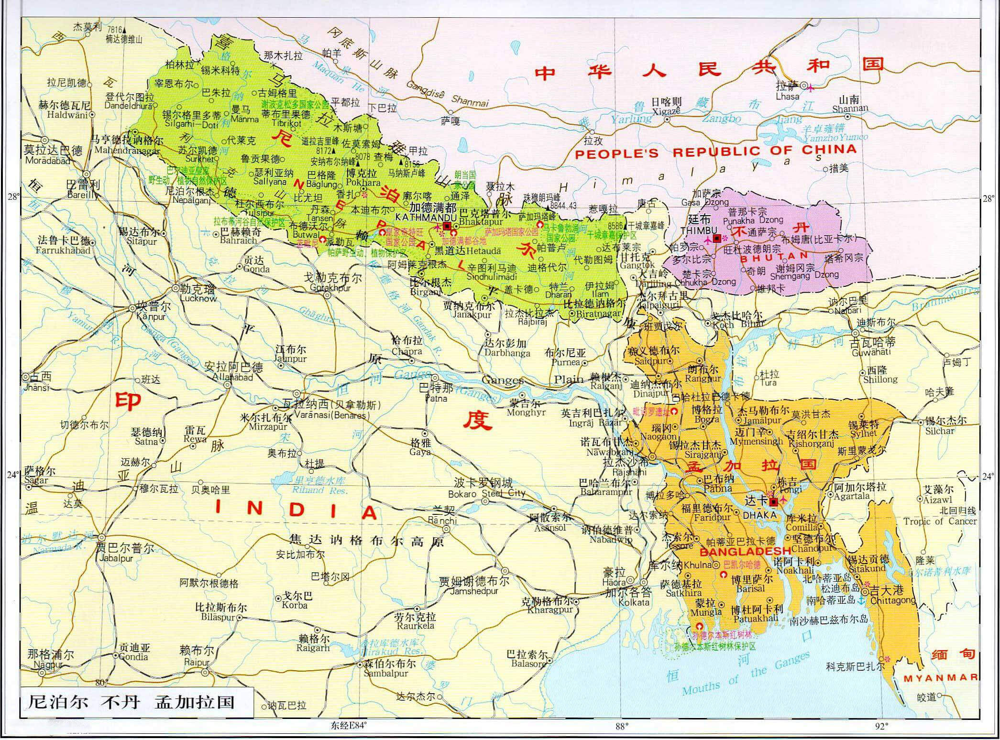
| | | | | |
| - | - | - | - | - |
|<b>中文名称</b>|尼泊尔联邦民主共和国||<b>人口密度</b>|202.2人/平方公里（2016年）|
|<b>英文名称</b>|Federal Democratic Republic of Nepal||<b>主要民族</b>|尼泊尔人|
|<b>简称</b>|尼泊尔||<b>主要宗教</b>|印度教、佛教、伊斯兰教|
|<b>所属洲</b>|亚洲||<b>国土面积</b>|147181平方公里|
|<b>首都</b>|加德满都||<b>水域率</b>|2.8%|
|<b>主要城市</b>|帕坦，巴德岗，博克拉等||<b>GDP总计</b>|244.72亿美元（2017年，国际汇率）|
|<b>国庆日</b>|9月20日||<b>人均GDP</b>|835美元（2017年，国际汇率）|
|<b>国歌</b>|《唯一百花盛开的国度》||<b>国际电话区号</b>|+977|
|<b>国家代码</b>|NPL||<b>国际域名缩写</b>|.np|
|<b>官方语言</b>|尼泊尔语||<b>道路通行</b>|靠左行驶|
|<b>货币</b>|尼泊尔卢比||<b>国花</b>|杜鹃花|
|<b>时区</b>|UTC+5:45||<b>国兽</b>|黄牛|
|<b>政治体制</b>|议会制共和制||<b>国鸟</b>|棕尾虹雉|
|<b>国家领袖</b>|总统：比迪娅·德维·班达里，总理：卡德加·普拉萨德·夏尔马·奥利||<b>人类发展指数</b>|0.463（低，2013年）|
|<b>人口数量</b>|2898万（2016年）||<b>主要学府</b>|特里布文大学、博卡拉大学等|
## <i class="fa fa-file-text-o"></i>&nbsp;目录（Table of Contents）
+ [I. 总路线图](#one)
+ [II. 景点（暂无）](#two)
+ [III. 路线规划](#three)
- [1、佩枯措 - 吉隆镇](#1)
- [2、吉隆镇 - 苏里·巴札](#2)
- [3、苏里·巴札 - 加德满都](#3)
- [4、加德满都 - 巴勒赫比塞](#4)
- [5、巴勒赫比塞 - 聂拉木县](#5)
- [6、聂拉木县 - 门士乡](#6)
<h2 id="one"><i class="fa fa-circle-o-notch fa-spin"></i>&nbsp;总路线图</h2>
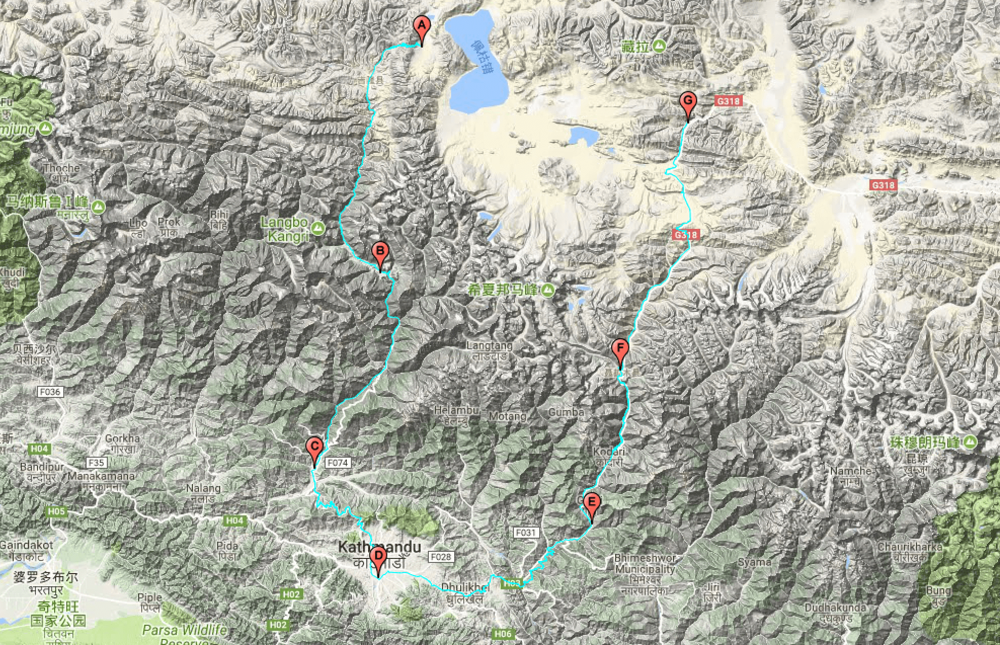
<h2 id="two"><i class="fa fa-star-o"></i>&nbsp;景点（暂无）</h2>
<h2 id="three"><i class="fa fa-spinner fa-pulse"></i>&nbsp;路线规划</h2>
<h4 id="1">1、佩枯措 - 吉隆镇&nbsp;&nbsp;<i class="fa fa-bicycle fa-2x"></i></h4>
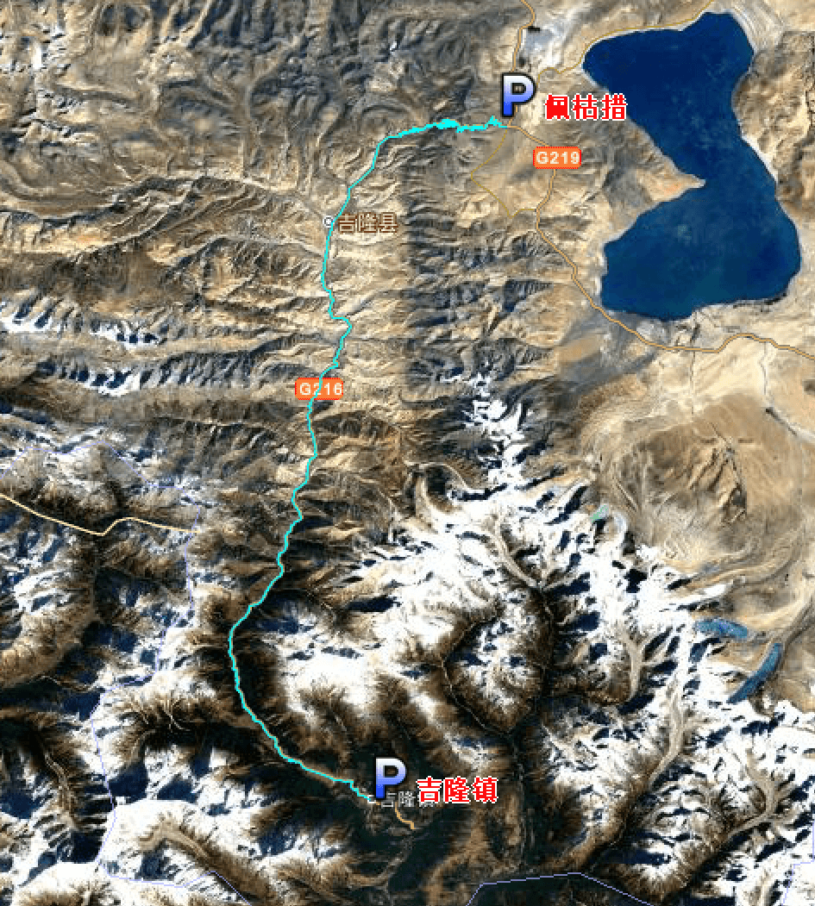
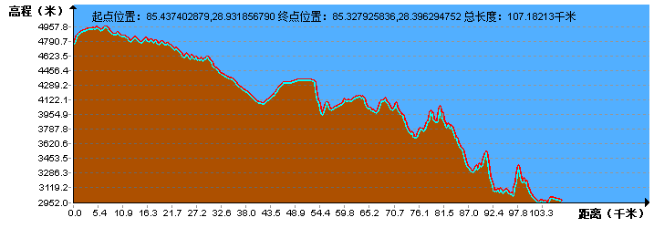
<h4 id="2">2、吉隆镇 - 苏里·巴札&nbsp;&nbsp;<i class="fa fa-bicycle fa-2x"></i></h4>
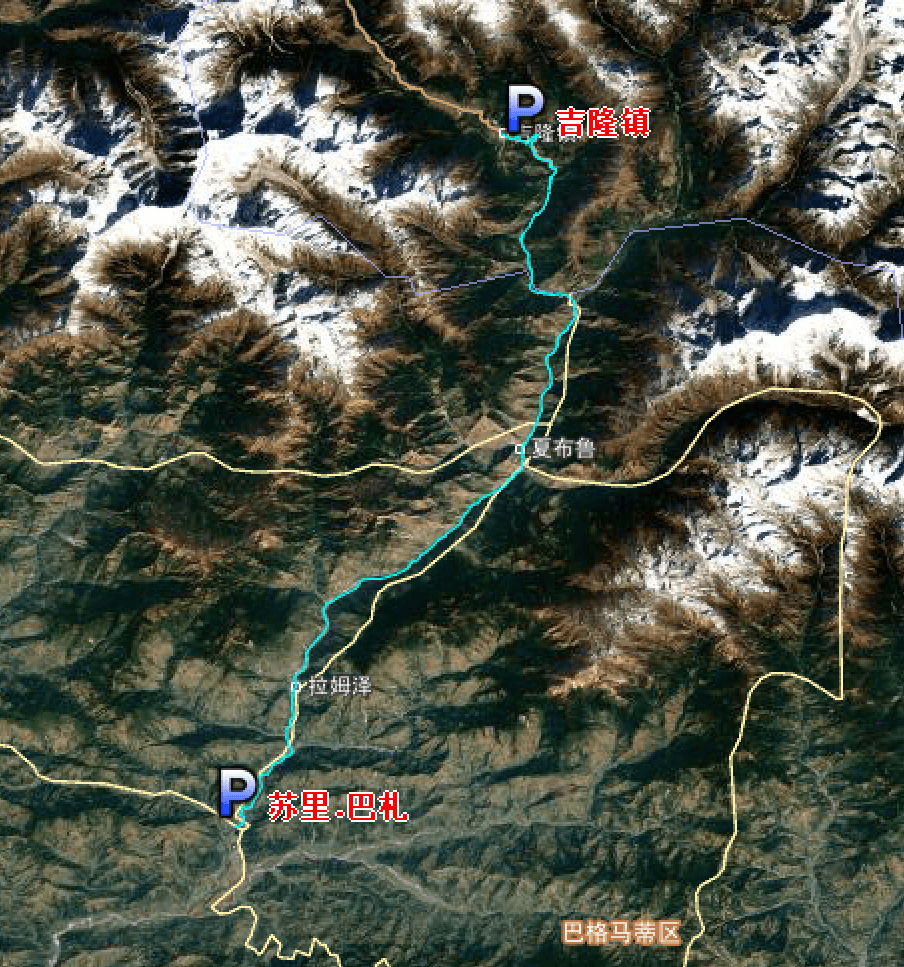
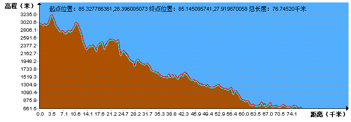
<h4 id="3">3、苏里·巴札 - 加德满都&nbsp;&nbsp;<i class="fa fa-bicycle fa-2x"></i></h4>
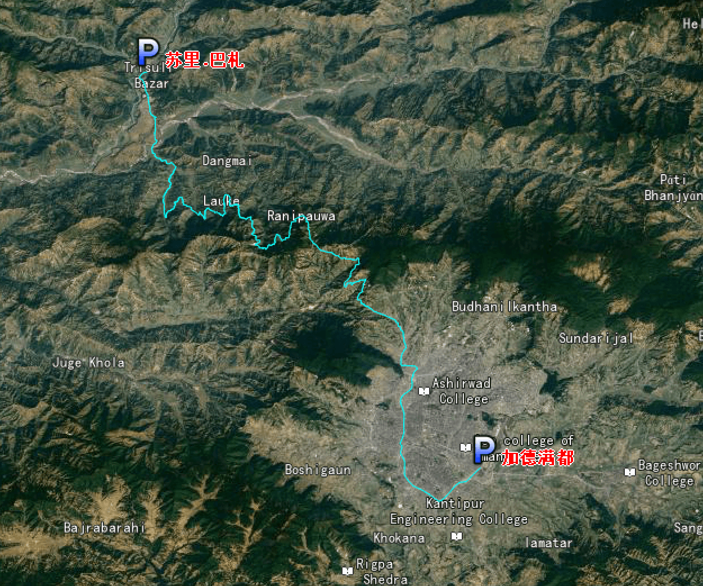
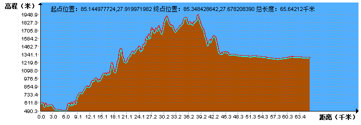
<h4 id="4">4、加德满都 - 巴勒赫比塞&nbsp;&nbsp;<i class="fa fa-bicycle fa-2x"></i></h4>
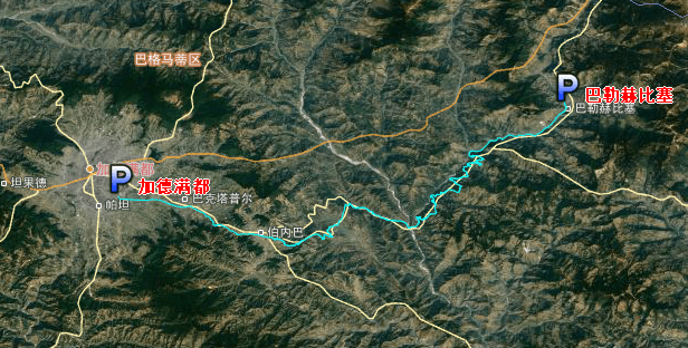
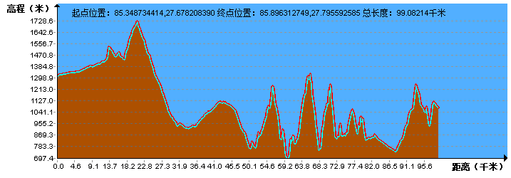
<h4 id="5">5、巴勒赫比塞 - 聂拉木县&nbsp;&nbsp;<i class="fa fa-bicycle fa-2x"></i></h4>
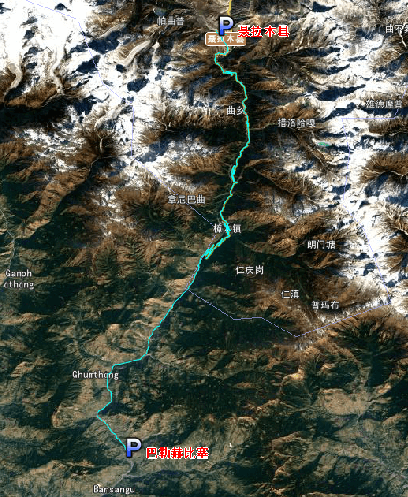
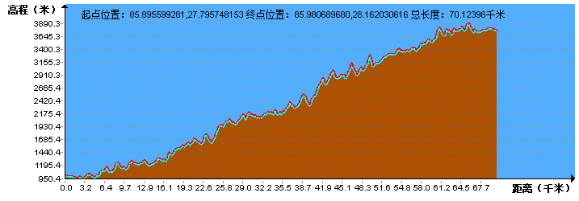
<h4 id="6">6、聂拉木县 - 门士乡&nbsp;&nbsp;<i class="fa fa-bicycle fa-2x"></i></h4>
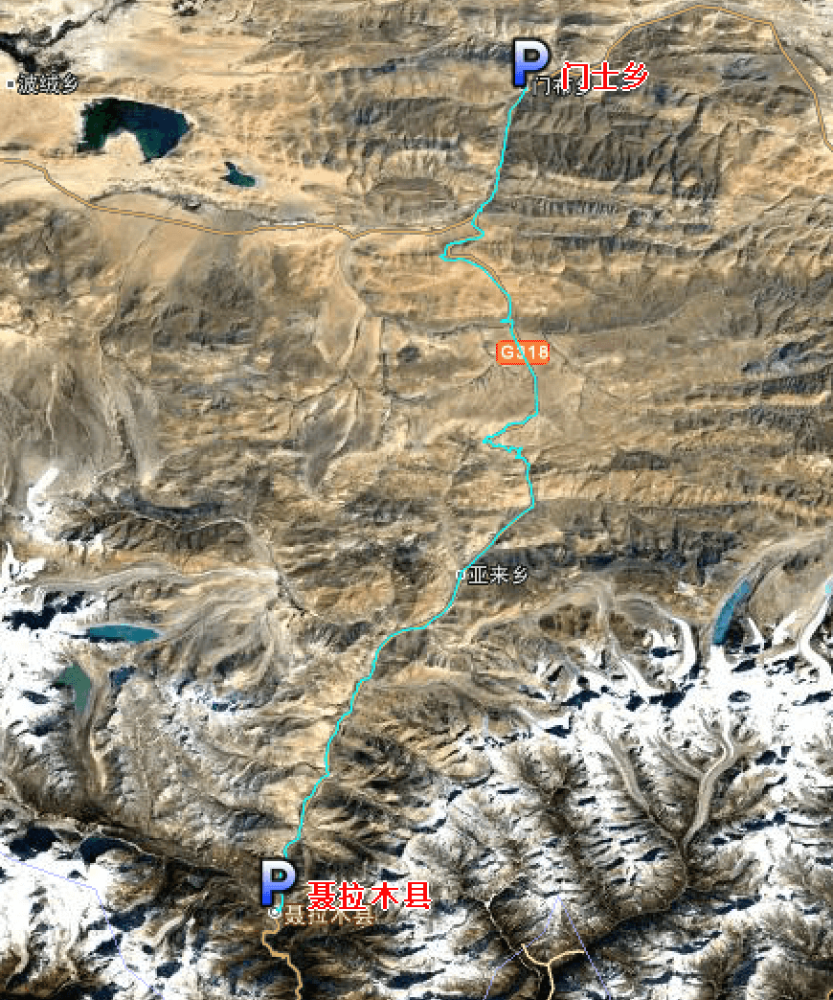
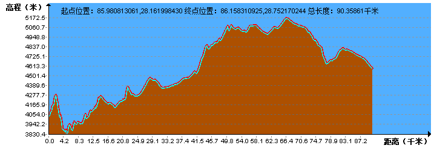